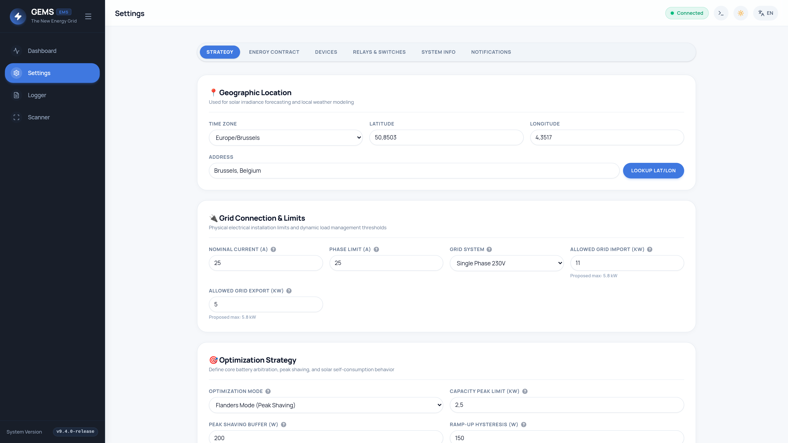
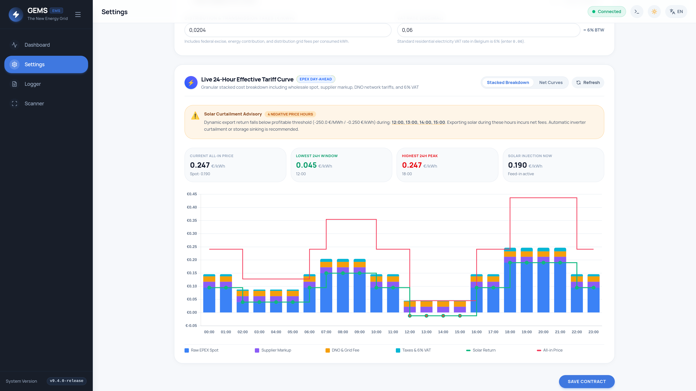
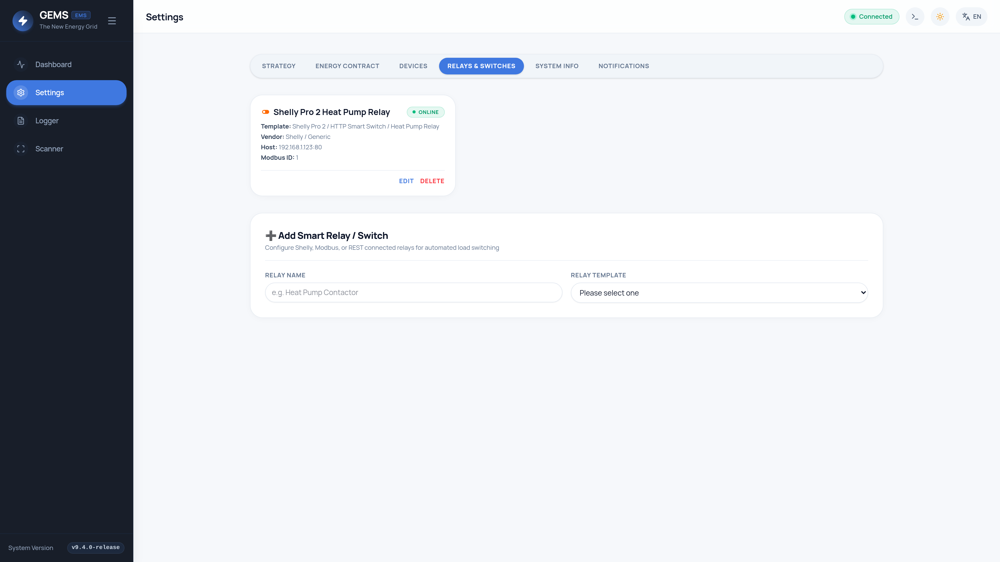
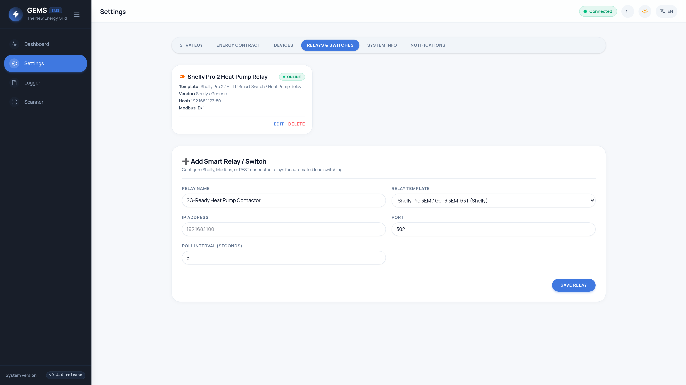
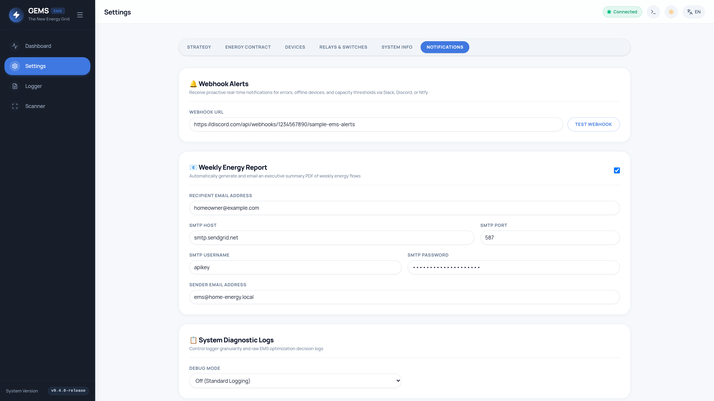

Configuration & Settings Reference Manual
This manual provides an exhaustive reference for every configuration parameter in GEMS. All settings map directly to the system engine and are configured exclusively via the web UI.
1. Site Optimization Strategies (`strategy_mode`)
The strategy engine runs an evaluation cycle every second to orchestrate solar inverters, battery storage, and EV charging points based on your operational goal.


| Mode | Target Goal | Primary Control Action |
|---|---|---|
eco |
Maximize Solar Self-Consumption | Directs excess solar yield first to home battery, then to EV chargers, and lastly to thermal hot water relays. Does not restrict grid import/export unless arbitrage schedules are active. |
flanders |
Capaciteitstarief Peak Shaving | Monitors rolling 15-minute average grid import. Dynamically throttles EV chargers and discharges battery storage to cap quarterly billing peaks. |
netherlands |
Zero-Export & Smart Saldering | Prevents solar feed-in penalties. Sinks solar into local batteries/EV chargers or actively throttles solar inverter active power when export prices are negative. |
2. Flanders Peak Shaving & Monthly Peak Tracking (`flanders`)
In Flanders (Belgium), the capacity tariff (capaciteitstarief) bills residential consumers based on their monthly peak 15-minute average grid power draw (minimum 2.5 kW baseline).
Predictive Instantaneous Power Allowance Formula
Instead of waiting for an overshoot to occur, GEMS computes the maximum allowed instantaneous power $P_{\text{allowed}}(t)$ based on the elapsed time $t$ (in seconds) within the current synchronized 15-minute quarter-hour:
// Target: Keep 15-min average <= capacity_peak_limit_kw
// t = elapsed seconds in current 15-min window [0 .. 900]
// E_accumulated = kWh imported in window so far
E_max_allowed = (capacity_peak_limit_kw * 0.25) - (peak_shaving_buffer_w / 4000.0)
E_remaining = E_max_allowed - E_accumulated
Time_left_hrs = (900 - t) / 3600.0
P_instantaneous_cap = E_remaining / Time_left_hrs
GEMS tracks the true 15-minute rolling average import peak for the calendar month in SQLite (/api/peaks/monthly). If an unavoidable peak occurs (e.g., 4.2 kW from multiple kitchen appliances), GEMS dynamically adapts its operational ceiling up to 4.2 kW for the remainder of the month, maximizing EV charging speed and solar self-consumption without increasing your capacity tariff bill.
Key Flanders Parameters
| Setting Key | Type | Default | Description |
|---|---|---|---|
capacity_peak_limit_kw |
Float (kW) | 2.50 |
The hard ceiling for the 15-minute average quarter-hour grid import. |
peak_shaving_buffer_w |
Integer (W) | 200 |
Safety margin subtracted from the target limit to account for short load spikes. |
peak_shaving_rampup_w |
Integer (W) | 150 |
Limits how quickly throttled devices (e.g. EV chargers) are allowed to ramp back up when grid load drops. |
3. Active Inverter Curtailment & Flemish GSC Value Protection
During periods of extreme renewable surplus across Europe, Day-Ahead spot prices on the EPEX Spot exchange can turn deeply negative. To protect homeowners from paying feed-in penalties while ensuring that subsidized systems continue earning their maximum subsidies, GEMS features smart threshold curtailment.
Active Curtailment & Regional Parameters
| Setting Key | Type | Default | Description |
|---|---|---|---|
region |
String | flanders |
Target regulatory region (flanders, brussels, wallonia, or netherlands). |
allowed_grid_export_kw |
Float (kW) | 0.0 |
Hard limit on continuous grid export. Set to 0.0 for strict zero-export in the Netherlands. |
active_inverter_curtailment |
Boolean | true |
Allows the Go backend to dispatch Modbus active power limits (SunSpec WMaxLimPct) to inverters when export becomes unprofitable. |
min_profitable_export_price |
Float (€/kWh) | 0.00 |
Base export price threshold below which power export is considered loss-making. |
gsc_value_eur_mwh |
Float (€/MWh) | 0.0 |
Groenestroomcertificaten (GSC) subsidy value in € per 1,000 kWh (e.g. 250 €/certificaat). Offsets the curtailment threshold. |
Homeowners in Flanders with PV systems commissioned before 2021 receive guaranteed green certificates (GSC). If a customer receives €250/certificaat (€0.250/kWh), solar injection remains profitable even at negative spot prices down to -250.0 €/MWh (-€0.250/kWh)!
Example: €0.00 - (€250 / 1000) = -€0.250/kWh (-250.0 €/MWh)
GEMS includes quick-select buttons for all standard Flemish GSC tiers: €0, €90, €210, €230, €250, €270, €330, €350, €450/MWh. Curtailment will ONLY trigger if market penalties exceed your GSC income.
4. Day-Ahead EPEX Spot Price Arbitrage
GEMS automatically fetches hourly Day-Ahead market spot prices at 14:00 CET daily for all European bidding zones (EPEX Spot Belgium, Netherlands, Germany, France, Luxembourg).
Battery Grid Charging Strategies (`battery_grid_charge_strategy`)
price_only: Charges from grid whenever the hourly spot price is belowforce_charge_below_euro; discharges to grid when price is aboveforce_discharge_above_euro.super_dal_only: Restricts grid charging strictly to supplier-optimized cheap off-peak contract windows (e.g., Engie Superdal).hybrid: Combines threshold price charging with supplier off-peak windows.dynamic_forecast: The most sophisticated mode. Computes an optimal 24-hour linear schedule by combining EPEX hourly spot prices with Open-Meteo solar irradiance forecasts and household baseline load (home_base_load_w).
To prevent premature battery degradation, GEMS factors the user's configured battery cycle degradation cost (e.g., €0.05 / kWh cycled) into the arbitrage spread calculation. A discharge cycle is executed only if the price spread between the charging hour and the discharging hour exceeds the round-trip battery degradation cost.
5. Energy Contracts & Regional Provider Formulas
To calculate true real-time electricity costs, GEMS allows mapping your exact supplier bill structure to the dynamic EPEX spot price.


Supported Regional Contract Providers
| Provider Profile | Region | Configured Formula Parameters |
|---|---|---|
| TotalEnergies Pixel Dynamic | Belgium | EPEX Spot BE pass-through + multiplier (totalenergies_multiplier) + markup (totalenergies_markup) + annual base fee (totalenergies_base_fee). |
| Mega Smart / Cosy Dynamic | Belgium | EPEX Spot BE + multiplier (mega_multiplier) + retail markup (mega_markup) + annual subscription (mega_base_fee). |
| Bolt Dynamisch | Belgium | 100% local green power with direct EPEX Spot BE pass-through and transparent platform markup. |
| Engie Dynamic / Flextime | Belgium | Direct EPEX Day-Ahead pass-through or time-of-use markups (peak, off-peak, super-off-peak). |
| Luminus / Eneco / Frank / Ecopower | BE / NL | Customizable linear multipliers, injection retain margins, and monthly fixed platform subscriptions. |
| Belgian Dual-Tariff (Piek/Dal) | Belgium | Standard residential day/night rate schedules combined with 6% BTW and DNO grid fee presets. |
| Enovos Dynamic | Luxembourg | enovos_markup, enovos_multiplier, enovos_inject_multiplier, Creos distribution fees. |
Distribution Network Operator (DNO) Presets
GEMS includes one-click presets for regional distribution and transmission grid fees per kWh:
- Fluvius (Flanders): €0.0204 / kWh + 6% BTW (VAT).
- ORES (Wallonia): €0.0950 / kWh + 6% BTW.
- RESA (Liège): €0.0920 / kWh + 6% BTW.
- SIBELGA (Brussels): €0.0820 / kWh + 6% BTW.
6. 3-Phase Phase-Aware Load Balancing & Safety
To prevent tripping main incoming utility breakers, GEMS continuously tracks per-phase current ($L_1, L_2, L_3$) from 3-phase P1 smart meters or Modbus analyzers.
| Setting Key | Type | Default | Description |
|---|---|---|---|
grid_nominal_current_a |
Integer (A) | 32 |
Main grid breaker amperage (e.g., 25A, 32A, 40A, 63A). Throttles EV chargers if total load nears breaker limit. |
phase_limit_amps |
Float (A) | 25.0 |
Maximum current allowed on any single phase ($L_1, L_2, \text{or } L_3$). Prevents severe phase unbalance tripping single-phase breakers. |
grid_system |
Enum | three_phase_400v |
single_phase_230v, three_phase_400v (with neutral), or three_phase_230v (without neutral / Belgian 3x230V Delta grid). |
7. Smart Relays & SG-Ready Heat Pump Automation
Create autonomous control rules for Shelly relays, Modbus contactors, and domestic hot water boilers under Settings → Relay Automation Rules.


Rule Parameters
- Condition Type:
solar_export_exceeds: Triggers ON when solar grid export exceeds threshold (e.g. > 1500 W).grid_import_below: Triggers ON when grid import is below threshold (e.g. < 200 W).price_below: Triggers ON when Day-Ahead electricity price drops below threshold (e.g. < €0.05 / kWh).
min_run_time_seconds(Default: 300s): Forces relay to stay ON for at least 5 minutes to prevent rapid cycling wear on compressors and contactors.min_off_time_seconds(Default: 300s): Enforces a 5-minute cooldown before reactivation.
SG-Ready Heat Pump 4-State Mapping
| SG-Ready State | Relay 1 (K1) | Relay 2 (K2) | Heat Pump Operating Behavior |
|---|---|---|---|
| State 1: Lockout (EVU-Sperre) | Closed | Open | Forced OFF during extreme peak tariff hours (max 2 hours continuous). |
| State 2: Normal Operation | Open | Open | Operates under standard internal heating curve / room thermostat. |
| State 3: Solar Boost | Open | Closed | Increases flow and hot water storage setpoints to store excess PV power as thermal energy. |
| State 4: Forced Thermal Storage | Closed | Closed | Forces maximum compressor output during negative spot price hours. |
8. Webhook Alerts, Email Reports & Diagnostic Logging

| Category | Setting Key | Description |
|---|---|---|
| Alerts | alert_webhook_url |
HTTP POST endpoint for automated alerts: capacity peak ≥ 90%, 3 consecutive device polling failures, or tariff fetch timeout. |
| Email Reports | weekly_report_enabled |
Toggles automated weekly PDF energy generation and outbound email dispatch. |
| SMTP Server | smtp_host, smtp_port, smtp_username, smtp_password, smtp_sender, report_email |
Outbound SMTP mail server credentials for sending PDF reports. |
| OTA Updates | github_token |
Personal Access Token (classic) to query GitHub API for release checks without experiencing IP rate limits. |
| Diagnostic Logs | log_level |
System log verbosity level (INFO for standard operations, DEBUG for verbose diagnostics). |